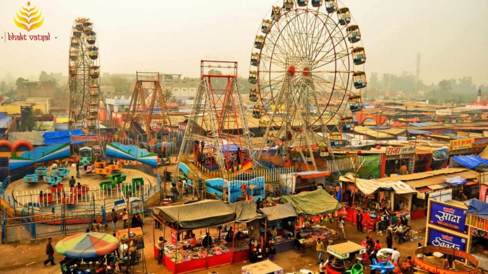

Top Destinations
Mahabodhi Temple
Mahabodhi Temple
The Mahabodhi Temple is one of the most sacred sites for Buddhists. Located in Bodh Gaya, Bihar, it marks the location where Siddhartha Gautama attained enlightenment under the Bodhi tree.

Nalanda University
Nalanda University
An ancient center of learning in Bihar, famous for its historical importance in Buddhist education.
Rajgir Hills
Rajgir Hills
Known for its scenic beauty and hot springs, it was once the capital of the Magadh Empire.

Golghar
Golghar
Historic granary in Patna with spiral stairs and panoramic city views from the top.

Sonepur Mela
Sonepur Mela
Asia’s largest cattle fair held at the confluence of the Ganges and Gandak rivers.

Kakolat Waterfall
Kakolat Waterfall
A stunning natural waterfall located in Nawada, perfect for a peaceful retreat.